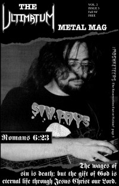

The Ultimatum Metal Mag, 1994
| Cover |
|---|
 |
| Writers in this Issue |
| Denlinger, Tom Dingess, Greg Gutierrez, Robert Lynch, Mike Trujillo, Steve Waters, Scott |
Win - Spr, volume 2, issue 1
Metal Happenings:- "Metal Happenings"
- "Sardonyx: The Future of Christian Metal" by Tom DenlingerSardonyx; accountability in Christian metal ministry
- "From the Heart" by Steve Trujillo
- "Stress!" by Greg Dingess
- "Power From On High" by Robert Gutierrez
- "Abortion"
- "For the Love of God" by Mike Lynch
- "The Edge of Truth" by Scott Waters
| Cover |
|---|
 |
| Writers in this Issue |
| Dingess, Greg Gutierrez, Robert Rushing, Nicole Trujillo, Steve Waters, Scott |
Sum, volume 2, issue 2
Metal Happenings:- "Metal Happenings"Ultimatum: new bassist (Mike Rickaby); recent and upcoming shows
- "Wickedness & Perdition: an Essay" by Nicole Rushing
- "The Edge of Truth" by Scott Waters
- "A Short Testimony" by Scott Waters
- "Back to the Bass-ics!" by Greg Dingess
- "Power From On High" by Robert Gutierrez
- "From the Heart" by Steve Trujillo
- "Letters to the Band"
| Cover |
|---|
|  |
| Writers in this Issue |
| Gutierrez, Robert Lynch, Mike Scozzafava, Paul Waters, Scott |
Fall, volume 2, issue 3
Metal Happenings:- "Metal Happenings"
- "The Edge of Truth" by Scott Waters
- "The Resurrection of Jesus Christ Fact or Fiction? Part 1" by Paul Scozzafava
- "Power From On High" by Robert Gutierrez
- "For the Love of God" by Mike Lynch
- "A Short Testimony" by Mike Lynch
- "Letters to the Band"
- "Bassist Wanted!"
Relevant Links
© 2011 CMnexus. Last updated September 2019. Contact: editor -AT- cmnexus -DØT- org About